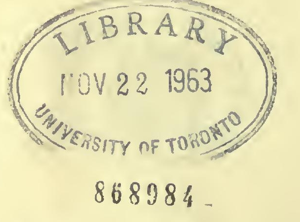

आचार्याभिनवगुप्तपादविरचितस्य
आचार्यजयरथकृतविवेकाव्यटीकोपेतस्य
श्रीतन्त्रालोकस्य

आचार्याभिनवगुप्तपादविरचितस्य
आचार्यजयरथकृतविवेकाव्यटीकोपेतस्य

नवममाह्निकम्

तत्त्वक्रमावभासनविभागविभवो भुजङ्गमाभरणः ।
भक्तजनजयावहतां वहति जयावहो जयति ॥
___________________
इदानीं द्वितीयार्धेन तत्त्वप्रविभागं कथयितुं
प्रतिजानीते
अथ तत्त्वप्रविभागो
विस्तरतः कथ्यते क्रमप्राप्तः ॥ १ ॥
विस्तरत इति - परपरिकल्पितसमारोपापसारण-
पुरःसरं यथातत्त्वं व्यवस्थापनात्, क्रमप्राप्त इति